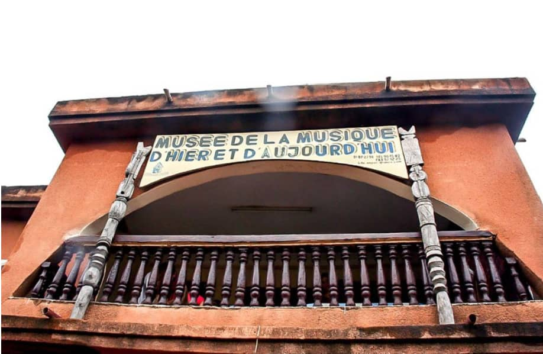

Description du Musée de la Musique d'Hier et d'aujourd'huit
La musique occupe une place prépondérante dans la société burkinabé. Les griots, caste de musiciens sont présents à toutes les cérémonies. Créé par l'ASPAC (Association pour la sauvegarde du Patrimoine Culturel) Inauguré en mars 2002, le Musée de la musique d'Hier et d'Aujourd'hui a pour but principal la collecte, la conservation et la promotion du patrimoine culturel, musical et artistique burkinabé. Une visite, intéressante et pédagogique, vous plongera dans l'un des arts majeurs du Burkina : la musique et ses instruments. Tambou balafon, bara, doumdoum, flûte ou harpe-luth, colectés auprès de différentes ethnies du Burkina-Faso depuis 1993 y sont exposés.